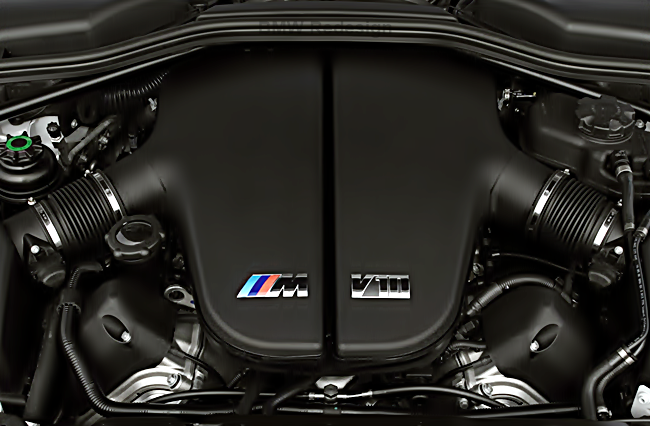
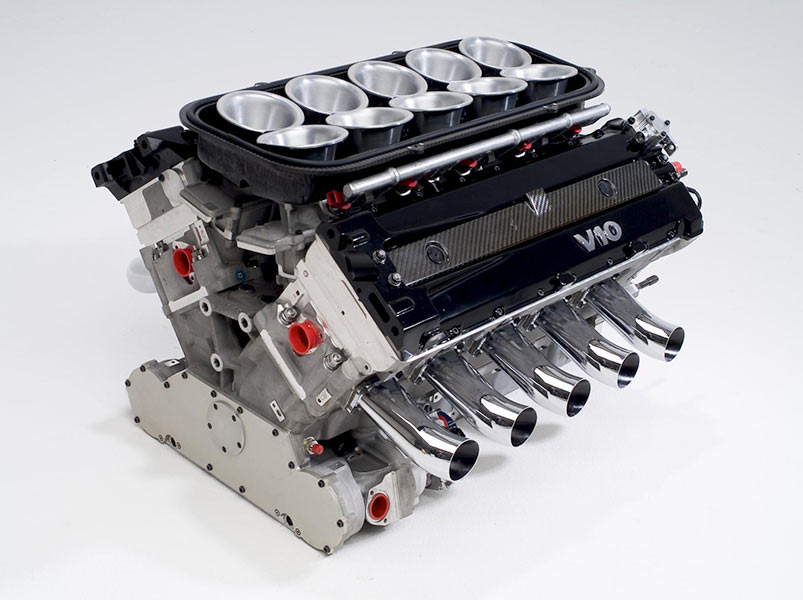

V10 engine

The BMW S85 is an absolutely gorgeous 5.0L V10 engine. With 500hp and an 8,250 redline the S85 engine sounds insane. Even as an older engine, its 100hp per liter is among the best for NA engines.
It's a naturally-aspirated 5.0-liter that makes 500 horsepower and 384 lb-ft of torque. Peak horsepower comes in at 7,750 rpm, while peak torque is around 6,100 rpm. It also revs to 8,250 rpm. In its higher rev range, the S85 makes one of the greatest sounds of any production engine in history.

First let’s talk a little bit about the S85 V10. The S85 is the only V10 production engine in BMW’s history. BMW M made V10s for Formula 1 back in the ’90s but the S85 was the only such engine in production road cars. It’s a naturally-aspirated 5.0-liter that makes 500 horsepower and 384 lb-ft of torque. Peak horsepower comes in at 7,750 rpm, while peak torque is around 6,100 rpm. It also revs to 8,250 rpm. In its higher rev range, the S85 makes one of the greatest sounds of any production engine in history
Debuting in 1997, the unit was good for 275hp (310 horses by 2000) and 425 lb-ft of torque, and it was offered in F-250-and-above trucks, as well as vans and buses.
It's a naturally-aspirated 5.0-liter that makes 500 horsepower and 384 lb-ft of torque. Peak horsepower comes in at 7,750 rpm, while peak torque is around 6,100 rpm. It also revs to 8,250 rpm. In its higher rev range, the S85 makes one of the greatest sounds of any production engine in history.
Im intrested
Back to preview